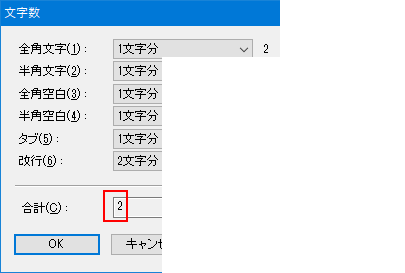

秀丸エディタ Ver.6.00以降では、「文字数計算」が可能です。
「文書全体の文字数」 「選択範囲の文字数」 「全体の行数」 「選択範囲の行数」が表示できます。 (「全体の行数」 「選択範囲の行数」はステータスバーへの表示のみ)
メニューの「その他−コマンド一覧」を選択し、「その他−文字数計算」を選んでください。
「文字数の計算」ですが、ダイアログで表示する方法のほか、ステータスバーに表示可能です。頻繁に使用するなら、ステータスバーに表示するように設定した方が良いでしょう。
ステータスバーの設定は「その他-動作環境」から動作環境のダイアログを表示させ、「ウィンドウ」を選択します。「ウィンドウ下部」にステータスバーの設定があります。表示する項目数によっては狭くて見にくい場合もあるので、「ファンクションキーとステータスバーを合体」のチェックは、外した方がよいでしょう。

「ステータスバー」の「詳細」を押すと表示する項目の設定画面が表示されるので、表示したい項目を選択します。
行数の計算は、現在開いているファイルの「ファイルタイプ別の設定」にある、「体裁-詳細-行番号の計算方法」によります。
「ファンクションキーとステータスバーを合体」のチェック状態によって、操作するタブが違うので、注意してください。

「計算方法」を押すと、文字数計算のダイアログが開き、文字数の計算方法が設定できます。すべて共通なので、1回設定すればいいです。
Ver.8.97以降では、文字種毎の文字数も表示されます。半角文字以外を「数えない」、半角文字を「単語(連続した半角)」にすると、簡易的ですが英単語数もカウントできます。
| 文字種 | 0.5文字分 | 1文字分 | 2文字分 | 数えない | カーソル移動単位 | 単語(連続した半角) |
|---|---|---|---|---|---|---|
| 全角文字 | − | ○ | ○ | ○ | ○ | − |
| 半角文字 | ○ | ○ | − | ○ | ○ | ○ |
| 全角空白 | − | ○ | ○ | ○ | − | − |
| 半角空白 | ○ | ○ | − | ○ | − | − |
| タブ | ○ | ○ | − | ○ | − | − |
| 改行 | − | ○ | ○ | ○ | − | − |
ステータスバーには、以下のように表示されます。(「ファンクションキーとステータスバーを合体」はOFF状態)

Unicodeの場合、結合文字や絵文字があると秀丸エディタの設定により、見た目と文字数が一致しません。以下の例では、見た目は1文字ですが、文字数は2になっています。(全角文字も1文字で計算するように設定)

これは、"ボ"が、Unicodeの結合文字で構成されているためです。 1文字に見えますが、"ホ"(U+30d8) + "゙"(濁点 U+3099) の2文字で構成されているため、文字数としては2として計算されます。
結合文字の表示方法は、「動作環境−編集−高度な編集2」で設定できます。
Unicodeの結合文字や絵文字を、秀丸エディタ上で表示されている文字数でカウントするには「カーソル移動単位」を選択してください。ただし、使用しているフォントの影響を受けます。